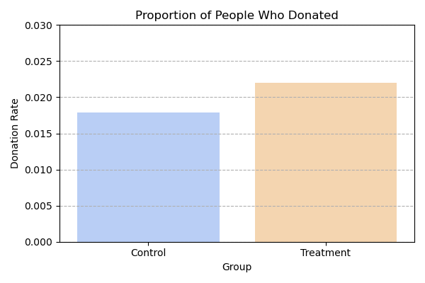
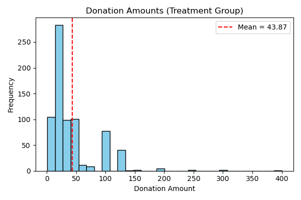
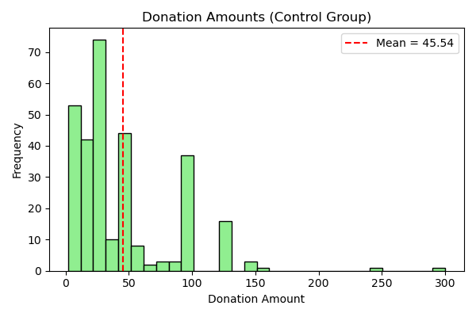
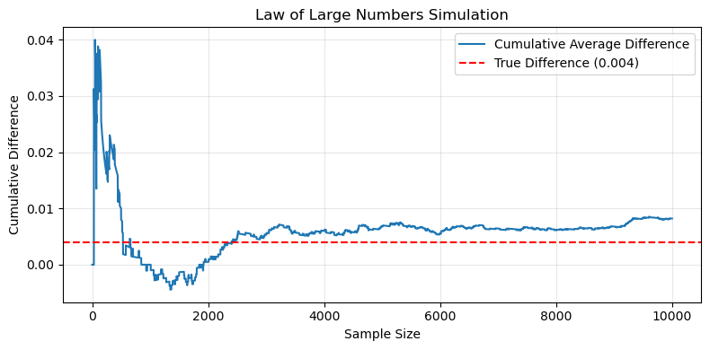
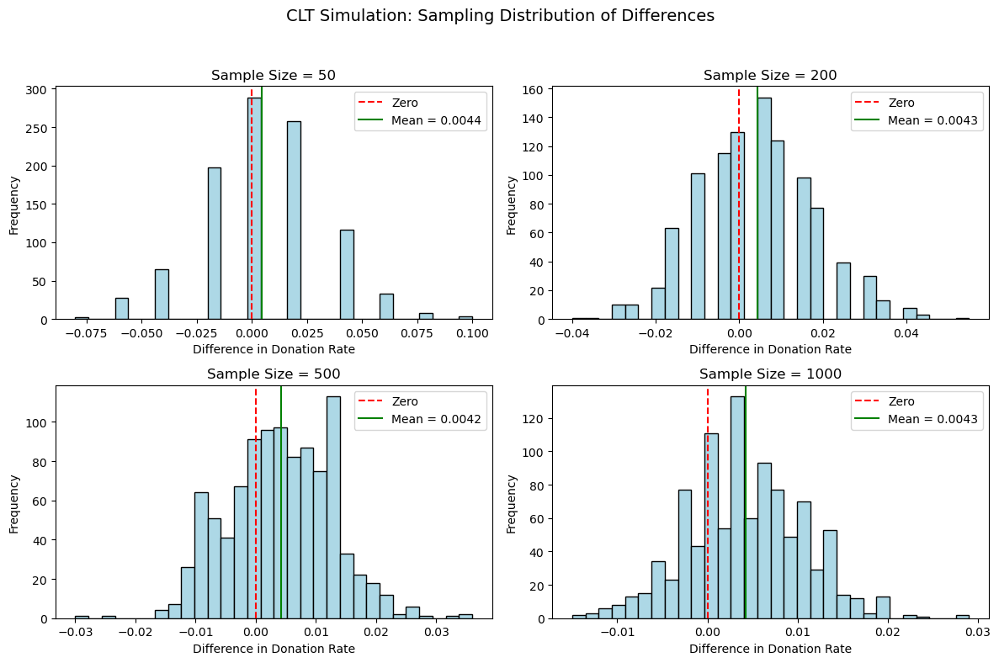

A Replication of Karlan and List (2007)
Introduction
Dean Karlan at Yale and John List at the University of Chicago conducted a field experiment to test the effectiveness of different fundraising letters. They sent out 50,000 fundraising letters to potential donors, randomly assigning each letter to one of three treatments: a standard letter, a matching grant letter, or a challenge grant letter. They published the results of this experiment in the American Economic Review in 2007. The article and supporting data are available from the AEA website and from Innovations for Poverty Action as part of Harvard’s Dataverse.
The experiment was designed to test how different types of matching grants—offers to match the donor’s contribution at different rates—would influence both the likelihood of giving and the amount donated. The treatments varied in three main dimensions:
- Match ratio: The donor’s contribution was matched by a leadership donor at a ratio of $1:$1, $2:$1, or $3:$1.
- Maximum match amount: The cap on the matching gift was randomly set at $25,000, $50,000, $100,000, or left unstated.
- Suggested donation amount: Based on the recipient’s highest previous contribution (HPC), the letters included one of three suggestions: HPC × 1.00, HPC × 1.25, or HPC × 1.50.
These variations were fully randomized, making this a natural field experiment that allows for strong causal inference.
This project seeks to replicate their results.
Data
Description
The dataset provided by Karlan and List (2007) is in .dta (Stata) format and includes over 50,000 observations, one for each individual who received a fundraising letter. Each row represents a donor and contains information about the treatment they were assigned to, their prior donation history, demographic characteristics, and whether they donated after receiving the letter.
Balance Test
As an ad hoc test of the randomization mechanism, I provide a series of tests that compare aspects of the treatment and control groups to assess whether they are statistically significantly different from one another.
To assess whether the randomization created comparable groups, I performed balance checks on several background variables. These include donation history (mrm2, freq, years), demographics (female, couple), and income indicators (ltmedmra, median_hhincome).
For each variable, I compared:
- the mean in the treatment vs control group,
- a t-test of the difference in means,
- and a regression coefficient from
variable ~ treatment.
vars_to_test = ['mrm2', 'freq', 'years', 'female', 'ltmedmra', 'median_hhincome', 'couple']
results = []
for var in vars_to_test:
treat = df[df['treatment'] == 1][var]
control = df[df['treatment'] == 0][var]
t_stat, p_val = ttest_ind(treat, control, nan_policy='omit')
model = smf.ols(f'{var} ~ treatment', data=df).fit()
coef = model.params['treatment']
reg_p = model.pvalues['treatment']
results.append({
"Variable": var,
"Treatment Mean": round(treat.mean(), 3),
"Control Mean": round(control.mean(), 3),
"T-Statistic": round(t_stat, 3),
"P-Value": round(p_val, 3),
"OLS Coefficient": round(coef, 3),
"OLS P-Value": round(reg_p, 3)
})
balance_summary = pd.DataFrame(results)
balance_summary.loc[balance_summary['Variable'] == 'female', ['Treatment Mean', 'Control Mean']] *= 100
balance_summary.loc[balance_summary['Variable'] == 'couple', ['Treatment Mean', 'Control Mean']] *= 100
balance_summary.loc[balance_summary['Variable'] == 'ltmedmra', ['Treatment Mean', 'Control Mean']] *= 100
balance_summary.loc[balance_summary['Variable'] == 'median_hhincome', ['Treatment Mean', 'Control Mean']] = \
balance_summary.loc[balance_summary['Variable'] == 'median_hhincome', ['Treatment Mean', 'Control Mean']].applymap(lambda x: f"${x:,.0f}")
balance_summaryThe table below summarizes these tests:
Balance Test Summaries
| Variable | Treatment Mean | Control Mean | T-Statistic | P-Value | OLS Coefficient | OLS P-Value |
|---|---|---|---|---|---|---|
mrm2 |
13.01 | 12.998 | 0.119 | 0.905 | 0.014 | 0.905 |
freq |
8.04 | 8.05 | -0.111 | 0.912 | -0.012 | 0.912 |
years |
6.08 | 6.14 | -1.103 | 0.270 | -0.058 | 0.270 |
female |
27.5% | 28.3% | -1.758 | 0.079 | -0.008 | 0.079 |
ltmedmra |
49.7% | 48.8% | 1.910 | 0.056 | 0.009 | 0.056 |
median_hhincome |
$54,763 | $54,921 | -0.742 | 0.458 | -157.93 | 0.458 |
couple |
9.14% | 9.30% | -0.584 | 0.559 | -0.002 | 0.559 |
None of the above variables show statistically significant differences (all p-values > 0.05). This suggests that the treatment and control groups were balanced at baseline, and that any later difference in outcomes is likely attributable to the treatment itself. These findings mirror Table 1 in Karlan & List (2007).
Experimental Results
Charitable Contribution Made
First, I analyze whether matched donations lead to an increased response rate of making a donation.
I begin by analyzing whether receiving a matching donation offer increases the likelihood of giving. As shown in the bar chart below, the response rate for the treatment group was 2.20%, while the control group had a response rate of only 1.79%.

I conduct a two-sample t-test to compare the mean donation rate (gave) between the treatment and control groups:
- Control mean: ~1.79%
- Treatment mean: ~2.20%
- T-statistic: 3.10
- p-value: 0.0019
This result indicates that the difference is statistically significant at the 1% level. In other words, people who received a matching donation offer were significantly more likely to donate.
Bivariate Linear Regression
I also ran a linear regression model: gave ~ treatment:
model = smf.ols('gave ~ treatment', data=df).fit()
print(model.summary())- Coefficient on treatment: 0.00418
- p-value: 0.0019
This suggests that assignment to treatment increases the donation probability by about 0.4 percentage points, which is a small but statistically meaningful effect, especially given the scale of the fundraising campaign. Together, the t-test and the regression confirm the same conclusion: the treatment group donated at a significantly higher rate than the control group.
Probit Regression
To confirm the finding using a nonlinear model (as in the original paper), I also estimate a probit regression with the same dependent variable:
probit_model = smf.probit('gave ~ treatment', data=df).fit()
print(probit_model.summary())Probit coefficient on treatment: 0.087
p-value: 0.0019
This replicates the finding in Table 3, Column 1 of Karlan & List (2007), where the authors also find that the presence of a match significantly increases the probability of donation.
Differences between Match Rates
Next, I assess the effectiveness of different sizes of matched donations on the response rate.
t-test
I conduct pairwise t-tests comparing donation rates across different match ratio groups within the treatment group:
gave_1 = df[df['ratio'] == 1]['gave']
gave_2 = df[df['ratio'] == 2]['gave']
gave_3 = df[df['ratio'] == 3]['gave']
print("1:1 vs 2:1", ttest_ind(gave_1, gave_2))
print("2:1 vs 3:1", ttest_ind(gave_2, gave_3))
print("1:1 vs 3:1", ttest_ind(gave_1, gave_3))- $1:$1 vs $2:$1: t = -0.97, p = 0.335
- $2:$1 vs $3:$1: t = -0.05, p = 0.960
- $1:$1 vs $3:$1: t = -1.02, p = 0.310
None of these comparisons are statistically significant at the 5% level, which suggests that increasing the match ratio does not significantly increase the likelihood of giving—consistent with the authors’ conclusion on page 8 of the paper.
Regression Analysis
I also fit a linear regression model where the dependent variable is gave and the independent variables are ratio2 and ratio3, using $1:$1 match as the baseline:
match_df = df[df['treatment'] == 1]
model = smf.ols('gave ~ ratio2 + ratio3', data=match_df).fit()
model.summary()Regression output summary:
- Coefficient on ratio2: 0.0019, p = 0.338
- Coefficient on ratio3: 0.0020, p = 0.313
The coefficients are small and statistically insignificant, confirming the same conclusion as the t-tests.
Difference in Donation Rates
We also directly compute the difference in response rates:
match_df = df[df['treatment'] == 1]
model = smf.ols('gave ~ ratio2 + ratio3', data=match_df).fit()
diff_12 = gave_2.mean() - gave_1.mean()
diff_23 = gave_3.mean() - gave_2.mean()
coef_diff = model.params['ratio3'] - model.params['ratio2']- From $1:$1 to $2:$1: +0.00188 (≈ 0.19 percentage points)
- From $2:$1 to $3:$1: +0.0001 (≈ 0.01 percentage points)
From the regression coefficients:
- ratio3 - ratio2 = +0.0001
These small and statistically insignificant changes indicate that donors do not respond more strongly to larger match ratios. Simply offering a match matters, but increasing the match ratio offers no additional benefit.
Size of Charitable Contribution
In this subsection, I analyze the effect of the size of matched donation on the size of the charitable contribution.
Full Sample Analysis (Including Non-Donors)
First, I compare average donation amounts across all individuals, including those who gave $0. Using both a t-test and a linear regression:
t_stat, p_val = ttest_ind(df[df['treatment'] == 1]['amount'], df[df['treatment'] == 0]['amount'])
model = smf.ols('amount ~ treatment', data=df).fit()- Mean amount (control) = $0.813
- Mean amount (treatment) = $0.967
- OLS coefficient on treatment = 0.1536
- t-statistic = 1.861
- p-value = 0.063
The positive coefficient indicates that the treatment group gave slightly more on average. However, the p-value is just above the common 0.05 threshold, suggesting marginal significance. Most of the observed difference appears to be driven by the fact that more people gave in the treatment group, rather than those who gave giving significantly more.
Conditional on Donation
I then limit the analysis to individuals who actually made a donation (gave == 1). I repeat the same steps:
donors_df = df[df['gave'] == 1]
t2, p2 = ttest_ind(donors_df[donors_df['treatment'] == 1]['amount'],
donors_df[donors_df['treatment'] == 0]['amount'])
model2 = smf.ols('amount ~ treatment', data=donors_df).fit()- Mean amount (control) = $45.54
- Mean amount (treatment) = $43.87
- OLS coefficient on treatment = -1.668
- t-statistic = -0.581
- p-value = 0.561
These results suggest that conditional on donating, people in the treatment group did not give more, and actually gave slightly less on average (though not statistically significantly). The p-value of 0.561 indicates no meaningful difference.
This implies that the treatment’s impact was primarily at the extensive margin (increasing the number of people who gave), and not at the intensive margin (increasing donation amount conditional on giving). This result supports the original conclusion from Karlan & List (2007).
Histograms of Donation Amounts
Below are two histograms showing the distribution of donation amounts among donors, separated by treatment group. The red dashed line represents the group mean.
 
Simulation Experiment
As a reminder of how the t-statistic “works,” in this section I use simulation to demonstrate the Law of Large Numbers and the Central Limit Theorem.
Suppose the true distribution of respondents who do not get a charitable donation match is Bernoulli with probability p=0.018 that a donation is made.
Further suppose that the true distribution of respondents who do get a charitable donation match of any size is Bernoulli with probability p=0.022 that a donation is made.
Law of Large Numbers
To demonstrate the Law of Large Numbers, I simulate two groups:
- A control group with a true probability of giving of p = 0.018
- A treatment group with a true probability of p = 0.022
I draw 10,000 samples from each distribution and calculate the difference in donation outcome (1 or 0) for each pair. Then I compute the cumulative average of these 10,000 differences and plot the result below:

Central Limit Theorem
To demonstrate the Central Limit Theorem (CLT), I simulate the difference in donation rates between the treatment (p = 0.022) and control (p = 0.018) groups at four different sample sizes: 50, 200, 500, and 1000. For each sample size, I repeat the experiment 1000 times, and in each trial I compute the average difference in donation rate:
At n = 50, the distribution is wide and irregular. The mean is slightly right of zero, but there’s a lot of noise. Zero is near the center.
At n = 200, the distribution starts to resemble a bell shape, but still has considerable spread.
At n = 500, the distribution becomes noticeably more symmetric, and the mean difference starts to stand out from zero.
At n = 1000, the distribution is tightly centered around 0.004, and zero is clearly in the left tail, indicating a consistent positive treatment effect.

I conclude that as sample size increases, the distribution of the average difference between treatment and control becomes more normal and more centered around the true mean—exactly as predicted by the Central Limit Theorem.
Conclusion
This project gave me a chance to explore how matching donations affect charitable giving by replicating the results from Karlan & List (2007). After digging into the data, I found that people who received a matching offer were definitely more likely to donate—just like the original paper said. Even though the increase was small in percentage terms, it’s meaningful when you’re dealing with tens of thousands of people.
One thing that stood out to me was that higher match ratios (like 2:1 or 3:1) didn’t really help any more than the basic 1:1 offer. So the key seems to be just having a match at all—not how big the match is.
When I looked at how much people gave, it turned out that the treatment group gave slightly more overall, but not because they gave more money individually. Instead, the bump came from more people deciding to give, not from people giving larger amounts.
Overall, this was a great example of how subtle changes in message framing (like offering a match) can change real-world behavior. And it showed me how field experiments and behavioral economics can go hand-in-hand.